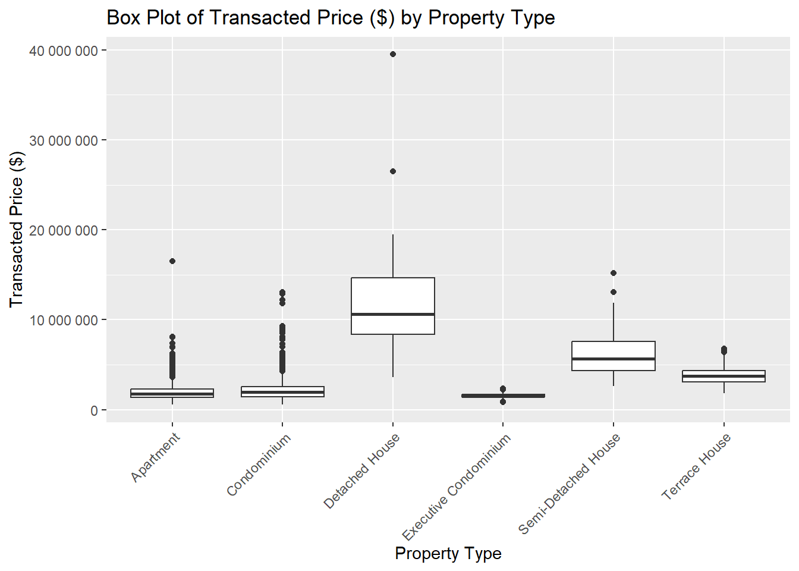

pacman::p_load(tidyverse, reshape2, ggridges, ggdist,
ggrepel, ggthemes, hrbrthemes, patchwork)Take-home Exercise 1 Part I - Creating Data Visualisation Beyond Default

Context
There are two major residential property market in Singapore, namely public and private housing. Public housing aims to meet the basic need of the general public with monthly household income less than or equal to S$14,000. For families with monthly household income more than S$14,000, they need to turn to the private residential market.
The Task
Assuming the role of a graphical editor of a median company, a minimum two and maximum three of data visualisations are prepared to reveal the private residential market and sub-markets of Singapore for the 1st quarter of 2024.
The Data

To accomplish the task, transaction data of REALIS will be used.
Downloading the Dataset
Access Dataset via SMU e-library

After logging in with SMU credentials, navigate to “Residential” tab

Under Property Types, “Select All”
Under Sale Date, select “2023 Jan” - “2024 Mar”
Click “Search”
Click “Download”
Due to the size of the dataset, it is split into multiple segments. Download all in .csv format

The Designing Tool
The data will be processed using the appropriate tidyverse family of packages and the statistical graphics will be prepared using ggplot2 and its extensions.
Getting Started
Installing and loading the required libraries
Note: Ensure that the pacman package has already been installed.
The code chunk below uses p_load() of pacman package to check if the listed packages are installed in the computer. If they are, then they will be launched into R. Otherwise, tidyverse will be installed and launched into R.
tidyverse: (i.e. readr, tidyr, dplyr, ggplot2, lubridate) for performing data science tasks such as importing, tidying, and wrangling data, as well as creating graphics based on The Grammar of Graphics
reshape2 for transforming data between wide and long formats
ggridges for creating ridgeline plots
ggdist for visualising distributions and uncertainty
ggrepel: provides geoms for ggplot2 to repel overlapping text labels.
ggthemes: provides some extra themes, geoms, and scales for ‘ggplot2’.
hrbrthemes: provides typography-centric themes and theme components for ggplot2.
patchwork: preparing composite figure created using ggplot2
Importing the Data
The data has been split into 5 .csv files
Define the path to the directory containing the CSV files.
Use
list.files()to list all CSV files in the specified directory.Loop through each CSV file, read it into a data frame using
read_csv(), and store it in a list.Use
bind_rows()to combine all data frames in the list into a single big data frame.
csv_directory <- "data/"
csv_files <- list.files(csv_directory, pattern = "\\.csv$", full.names = TRUE)
realis <- list()
for (file in csv_files) {
realis[[file]] <- read_csv(file)
}realis_all <- bind_rows(realis)View Data
- Use the
names()function to print the names of the columns in the tibble data frame. - Use the
glimpse()function to get a quick overview of the tibble data frame
col_names <- names(realis_all)
col_names [1] "Project Name" "Transacted Price ($)"
[3] "Area (SQFT)" "Unit Price ($ PSF)"
[5] "Sale Date" "Address"
[7] "Type of Sale" "Type of Area"
[9] "Area (SQM)" "Unit Price ($ PSM)"
[11] "Nett Price($)" "Property Type"
[13] "Number of Units" "Tenure"
[15] "Completion Date" "Purchaser Address Indicator"
[17] "Postal Code" "Postal District"
[19] "Postal Sector" "Planning Region"
[21] "Planning Area" glimpse(realis_all)Rows: 26,806
Columns: 21
$ `Project Name` <chr> "THE REEF AT KING'S DOCK", "URBAN TREASU…
$ `Transacted Price ($)` <dbl> 2317000, 1823500, 1421112, 1258112, 1280…
$ `Area (SQFT)` <dbl> 882.65, 882.65, 1076.40, 1033.34, 871.88…
$ `Unit Price ($ PSF)` <dbl> 2625, 2066, 1320, 1218, 1468, 1767, 1095…
$ `Sale Date` <chr> "01 Jan 2023", "02 Jan 2023", "02 Jan 20…
$ Address <chr> "12 HARBOURFRONT AVENUE #05-32", "205 JA…
$ `Type of Sale` <chr> "New Sale", "New Sale", "New Sale", "New…
$ `Type of Area` <chr> "Strata", "Strata", "Strata", "Strata", …
$ `Area (SQM)` <dbl> 82.0, 82.0, 100.0, 96.0, 81.0, 308.7, 42…
$ `Unit Price ($ PSM)` <dbl> 28256, 22238, 14211, 13105, 15802, 19015…
$ `Nett Price($)` <chr> "-", "-", "-", "-", "-", "-", "-", "-", …
$ `Property Type` <chr> "Condominium", "Condominium", "Executive…
$ `Number of Units` <dbl> 1, 1, 1, 1, 1, 1, 1, 1, 1, 1, 1, 1, 1, 1…
$ Tenure <chr> "99 yrs from 12/01/2021", "Freehold", "9…
$ `Completion Date` <chr> "Uncompleted", "Uncompleted", "Uncomplet…
$ `Purchaser Address Indicator` <chr> "HDB", "Private", "HDB", "HDB", "HDB", "…
$ `Postal Code` <chr> "097996", "419535", "269343", "269294", …
$ `Postal District` <chr> "04", "14", "27", "27", "28", "19", "10"…
$ `Postal Sector` <chr> "09", "41", "26", "26", "79", "54", "27"…
$ `Planning Region` <chr> "Central Region", "East Region", "North …
$ `Planning Area` <chr> "Bukit Merah", "Bedok", "Yishun", "Yishu…
Note
realis_all contains:
Public and Private residential property transaction data from 1st January 2023 to 31st March 2024.
There are 26806 rows and 21 columns.
Data Preparation
The task only requires data from the private residential market and sub-markets of Singapore for the 1st quarter of 2024.
Standardise Date Column Format
The “Sales Date” column is currently a cha type. It needs to be converted into date format.
dmy() is a function from the lubridate package that converts character strings to date format in the day-month-year (DMY) order.
Standardise Date Format and verify column type after standardisation
realis_all$`Sale Date` <- dmy(realis_all$`Sale Date`)
class(realis_all$`Sale Date`)[1] "Date"Check data
head(realis_all$`Sale Date`)[1] "2023-01-01" "2023-01-02" "2023-01-02" "2023-01-02" "2023-01-03"
[6] "2023-01-03"Keep only relevant rows
Filter and keep only rows that:
Sales Date that occur within Q1 2024 i.e. between 01 Jan 2024 to 31 Mar 2024 inclusive.
Purchaser Address Indicator not equal to “HDB”
In addition, any duplicate or empty rows are also removed.
q1_pte_raw <- realis_all %>%
filter(`Sale Date` >= as.Date("2024-01-01") &
`Sale Date` <= as.Date("2024-03-31"),
`Purchaser Address Indicator` != "HDB") %>%
distinct() %>%
drop_na()View Data
glimpse(q1_pte_raw)Rows: 3,567
Columns: 21
$ `Project Name` <chr> "THE LANDMARK", "POLLEN COLLECTION", "TE…
$ `Transacted Price ($)` <dbl> 2726888, 3850000, 2190000, 1954000, 3412…
$ `Area (SQFT)` <dbl> 1076.40, 1808.35, 807.30, 796.54, 1323.9…
$ `Unit Price ($ PSF)` <dbl> 2533, 2129, 2713, 2453, 2577, 838, 2007,…
$ `Sale Date` <date> 2024-01-01, 2024-01-01, 2024-01-01, 202…
$ Address <chr> "173 CHIN SWEE ROAD #22-11", "34 POLLEN …
$ `Type of Sale` <chr> "New Sale", "New Sale", "New Sale", "New…
$ `Type of Area` <chr> "Strata", "Land", "Strata", "Strata", "S…
$ `Area (SQM)` <dbl> 100.0, 168.0, 75.0, 74.0, 123.0, 328.0, …
$ `Unit Price ($ PSM)` <dbl> 27269, 22917, 29200, 26405, 27741, 9024,…
$ `Nett Price($)` <chr> "-", "-", "-", "-", "-", "-", "-", "-", …
$ `Property Type` <chr> "Condominium", "Terrace House", "Apartme…
$ `Number of Units` <dbl> 1, 1, 1, 1, 1, 1, 1, 1, 1, 1, 1, 1, 1, 1…
$ Tenure <chr> "99 yrs from 28/08/2020", "99 yrs from 0…
$ `Completion Date` <chr> "Uncompleted", "Uncompleted", "Uncomplet…
$ `Purchaser Address Indicator` <chr> "Private", "N.A", "N.A", "Private", "Pri…
$ `Postal Code` <chr> "169878", "807233", "118992", "598444", …
$ `Postal District` <chr> "03", "28", "05", "21", "21", "28", "20"…
$ `Postal Sector` <chr> "16", "80", "11", "59", "58", "79", "57"…
$ `Planning Region` <chr> "Central Region", "North East Region", "…
$ `Planning Area` <chr> "Outram", "Serangoon", "Queenstown", "Bu…
Note
q1_pte_raw contains:
Private residential property transaction data from 1st January 2024 to 31st March 2024
There are 3567 rows and 21 columns.
Keep only relevant columns
Not all 21 columns will be used for analysis e.g. irrelevant, contains overlapping information as another column. Only relevant columns will be kept.
Columns to drop:
Type of Area: Not used in analysis
Area (SQM): Similar information as Area (SQFT)
Unit Price ($ PSM): Similar information as Unit Price ($ PSF)
Nett Price ($): Similar information as Transacted Price ($)
Purchaser Address Indicator: Not used in analysis
Postal District and Postal Sector: Overlapping information as Postal Code
The select() function is used to choose the columns to keep. However, by prefixing the column names with a minus sign (-), the function will drop the specified columns instead.
q1_pte <- q1_pte_raw %>%
select(
-`Type of Area`,
-`Area (SQM)`,
-`Unit Price ($ PSM)`,
-`Nett Price($)`,
-`Purchaser Address Indicator`,
-`Postal District`,
-`Postal Sector`
)View Data
glimpse(q1_pte)Rows: 3,567
Columns: 14
$ `Project Name` <chr> "THE LANDMARK", "POLLEN COLLECTION", "TERRA HIL…
$ `Transacted Price ($)` <dbl> 2726888, 3850000, 2190000, 1954000, 3412201, 29…
$ `Area (SQFT)` <dbl> 1076.40, 1808.35, 807.30, 796.54, 1323.97, 3530…
$ `Unit Price ($ PSF)` <dbl> 2533, 2129, 2713, 2453, 2577, 838, 2007, 1756, …
$ `Sale Date` <date> 2024-01-01, 2024-01-01, 2024-01-01, 2024-01-01…
$ Address <chr> "173 CHIN SWEE ROAD #22-11", "34 POLLEN PLACE",…
$ `Type of Sale` <chr> "New Sale", "New Sale", "New Sale", "New Sale",…
$ `Property Type` <chr> "Condominium", "Terrace House", "Apartment", "C…
$ `Number of Units` <dbl> 1, 1, 1, 1, 1, 1, 1, 1, 1, 1, 1, 1, 1, 1, 1, 1,…
$ Tenure <chr> "99 yrs from 28/08/2020", "99 yrs from 09/12/20…
$ `Completion Date` <chr> "Uncompleted", "Uncompleted", "Uncompleted", "U…
$ `Postal Code` <chr> "169878", "807233", "118992", "598444", "589605…
$ `Planning Region` <chr> "Central Region", "North East Region", "Central…
$ `Planning Area` <chr> "Outram", "Serangoon", "Queenstown", "Bukit Tim…
Note
q1_pte contains:
Private residential property transaction data from 1st January 2024 to 31st March 2024
There are 3567 rows and 14 columns.
Visualisation
Price Distribution
Create box plots for the price distribution of each private residence property type. geom_boxplot() displays continuous value list. It visualises five summary statistics (the median, two hinges and two whiskers), and all “outlying” points individually.
Note: For better visibility, labels parameter with the function scales::number, formats the y-axis labels to include thousands separators.

box_plot <- ggplot(data = q1_pte,
aes(x = `Property Type`, y = `Transacted Price ($)`)) +
geom_boxplot() +
labs(title = "Box Plot of Transacted Price ($) by Property Type",
x = "Property Type",
y = "Transacted Price ($)") +
scale_y_continuous(labels = scales::number) +
theme_gray() + theme(axis.text.x = element_text(angle = 45,
hjust = 1,
vjust=1))
box_plot
Tip
According to the box plot, Detached Houses generally have the highest transacted prices. The Q1, median, and Q3 values for this property type are all substantially higher than those of other types, indicating its premium market status. Detached Houses also exhibit the highest variability in transacted prices, although there are relatively few outliers.
In contrast, both Executive Condominiums and Terrace Houses demonstrate the least variability in transacted prices, with their interquartile ranges (IQR) closely aligning with their medians. This suggests a stable and consistent pricing trend for these property types.
Executive Condominiums have the lowest transacted prices, indicating their appeal as an affordable option within the private housing market.
Apartments and Condominiums, on the other hand, show a significant number of outliers in their transacted prices, suggesting a wider range of pricing and potentially more diversity in market conditions for these property types.
Group by Property Type
There are various types of Properties for Private residences.
unique(q1_pte$`Property Type`)[1] "Condominium" "Terrace House" "Apartment"
[4] "Executive Condominium" "Semi-Detached House" "Detached House"
Note
The different types in the dataset are:
Condominium
Terrace House
Apartment
Executive Condominium
Semi-Detached House
Detached House
To allow for more in depth analysis of each Property Type, q1_pte tibble data frame is split into a list of smaller tibbles based on “Property Type”.
group_by()groups theq1_ptetibble data frame by the “Property Type” column.group_split()splits the grouped data frame into a list of smaller tibbles based on “Property Type.”group_keys()retrieves the values of the grouping column (“Property Type”) for each group.setNames()is used to create a named list where each element of the list is one of the smaller tibbles, and each tibble is named according to the corresponding value of the “Property Type” column.
grouped_q1_pte <- q1_pte %>%
group_by(`Property Type`)
tibble_list <- group_split(grouped_q1_pte)
ppty_type_name <- group_keys(grouped_q1_pte)$`Property Type`
ppty_type_name <- setNames(tibble_list, ppty_type_name)View Data
The tabset below allows the view of the newly created smaller Property Type tibble data frames in alphabetical order.
apart_df <- ppty_type_name[["Apartment"]]
apart_df# A tibble: 1,425 × 14
`Project Name` `Transacted Price ($)` `Area (SQFT)` `Unit Price ($ PSF)`
<chr> <dbl> <dbl> <dbl>
1 TERRA HILL 2190000 807. 2713
2 THE RESERVE RESIDE… 3412201 1324. 2577
3 PARC KOMO 1758000 1001. 1756
4 SIXTH AVENUE CENTRE 1935000 1173. 1649
5 NOMA 1500000 850. 1764
6 MAYSPRINGS 960000 904. 1062
7 PARC ESTA 2088000 1023. 2042
8 BLOSSOMS BY THE PA… 3364000 1302. 2583
9 THE RESERVE RESIDE… 3350000 1324. 2530
10 NORTHVALE 790000 689. 1147
# ℹ 1,415 more rows
# ℹ 10 more variables: `Sale Date` <date>, Address <chr>, `Type of Sale` <chr>,
# `Property Type` <chr>, `Number of Units` <dbl>, Tenure <chr>,
# `Completion Date` <chr>, `Postal Code` <chr>, `Planning Region` <chr>,
# `Planning Area` <chr>condo_df <- ppty_type_name[["Condominium"]]
condo_df# A tibble: 1,295 × 14
`Project Name` `Transacted Price ($)` `Area (SQFT)` `Unit Price ($ PSF)`
<chr> <dbl> <dbl> <dbl>
1 THE LANDMARK 2726888 1076. 2533
2 PINETREE HILL 1954000 797. 2453
3 ECO 1620000 990. 1636
4 THE GARDENS AT BIS… 1800000 1206. 1493
5 THOMSON 800 2800000 1625. 1723
6 SELETAR PARK RESID… 1490000 1507. 989
7 THE ESTUARY 1540000 1195. 1289
8 THE INTERLACE 2658000 1615. 1646
9 DUNMAN VIEW 1800000 1216. 1480
10 EUHABITAT 788000 560. 1408
# ℹ 1,285 more rows
# ℹ 10 more variables: `Sale Date` <date>, Address <chr>, `Type of Sale` <chr>,
# `Property Type` <chr>, `Number of Units` <dbl>, Tenure <chr>,
# `Completion Date` <chr>, `Postal Code` <chr>, `Planning Region` <chr>,
# `Planning Area` <chr>det_df <- ppty_type_name[["Detached House"]]
det_df# A tibble: 39 × 14
`Project Name` `Transacted Price ($)` `Area (SQFT)` `Unit Price ($ PSF)`
<chr> <dbl> <dbl> <dbl>
1 N.A. 15000000 8701. 1724
2 FRANKEL ESTATE 8380000 4514. 1856
3 N.A. 26500000 12871. 2059
4 N.A. 13990000 5880. 2379
5 SELETAR HILLS ESTA… 8800000 8302. 1060
6 N.A. 13400000 6448. 2078
7 KIARA 10 3618000 5748. 629
8 VERDURE VILLAS 5400000 5199. 1039
9 DUNEARN ESTATE 17500000 5013. 3491
10 FRANKEL ESTATE 9500000 5635. 1686
# ℹ 29 more rows
# ℹ 10 more variables: `Sale Date` <date>, Address <chr>, `Type of Sale` <chr>,
# `Property Type` <chr>, `Number of Units` <dbl>, Tenure <chr>,
# `Completion Date` <chr>, `Postal Code` <chr>, `Planning Region` <chr>,
# `Planning Area` <chr>ec_df <- ppty_type_name[["Executive Condominium"]]
ec_df# A tibble: 549 × 14
`Project Name` `Transacted Price ($)` `Area (SQFT)` `Unit Price ($ PSF)`
<chr> <dbl> <dbl> <dbl>
1 TREASURE CREST 1790000 1249. 1434
2 ESPARINA RESIDENCES 1318800 829. 1591
3 WATERBAY 1598000 1141. 1401
4 TREASURE CREST 1562000 1076. 1451
5 BLOSSOM RESIDENCES 1245000 1055. 1180
6 NORTH GAIA 1487000 1076. 1381
7 THE CRITERION 1550000 1249. 1241
8 SOL ACRES 1170000 850. 1376
9 LA CASA 1130000 1141. 990
10 ESPARINA RESIDENCES 1828000 1163. 1572
# ℹ 539 more rows
# ℹ 10 more variables: `Sale Date` <date>, Address <chr>, `Type of Sale` <chr>,
# `Property Type` <chr>, `Number of Units` <dbl>, Tenure <chr>,
# `Completion Date` <chr>, `Postal Code` <chr>, `Planning Region` <chr>,
# `Planning Area` <chr>semi <- ppty_type_name[["Semi-Detached House"]]
semi# A tibble: 82 × 14
`Project Name` `Transacted Price ($)` `Area (SQFT)` `Unit Price ($ PSF)`
<chr> <dbl> <dbl> <dbl>
1 ORCHID VILLAGE 13100000 3667. 3572
2 MAYFLOWER GARDENS 6980000 4085. 1709
3 HOLLAND GROVE 3500000 2398. 1459
4 N.A. 5900000 3996. 1477
5 N.A. 11500000 6016 1912
6 SENNETT ESTATE 6000000 4497. 1334
7 CAMELIA PARK 5300000 4672. 1135
8 SERANGOON GARDEN E… 4700000 2486. 1890
9 N.A. 5700000 4048. 1408
10 FRANKEL ESTATE 6300000 3828. 1646
# ℹ 72 more rows
# ℹ 10 more variables: `Sale Date` <date>, Address <chr>, `Type of Sale` <chr>,
# `Property Type` <chr>, `Number of Units` <dbl>, Tenure <chr>,
# `Completion Date` <chr>, `Postal Code` <chr>, `Planning Region` <chr>,
# `Planning Area` <chr>terra <- ppty_type_name[["Terrace House"]]
terra# A tibble: 177 × 14
`Project Name` `Transacted Price ($)` `Area (SQFT)` `Unit Price ($ PSF)`
<chr> <dbl> <dbl> <dbl>
1 POLLEN COLLECTION 3850000 1808. 2129
2 SUMMER VILLAS 2960000 3531. 838
3 SEMBAWANG HILLS ES… 4200000 2093. 2007
4 THE MORRIS RESIDEN… 3530000 4015. 879
5 CABANA 2750000 3068. 896
6 APOLLO GARDENS 5100000 4592. 1111
7 N.A. 2750000 3299. 834
8 POLLEN COLLECTION 4050000 2153. 1881
9 PICARDY GARDENS 3940000 2310. 1706
10 N.A. 3950000 2646. 1493
# ℹ 167 more rows
# ℹ 10 more variables: `Sale Date` <date>, Address <chr>, `Type of Sale` <chr>,
# `Property Type` <chr>, `Number of Units` <dbl>, Tenure <chr>,
# `Completion Date` <chr>, `Postal Code` <chr>, `Planning Region` <chr>,
# `Planning Area` <chr>Geographical Distribution:
Choropleth Map: Use a map to visualize property sales and prices across different districts or areas in Singapore. This can reveal hotspots of activity and areas with higher or lower average prices.
Sales Heatmap: Create a heatmap showing the density of property transactions in different areas. This can provide insights into which parts of Singapore are seeing the most activity in the private residential market.